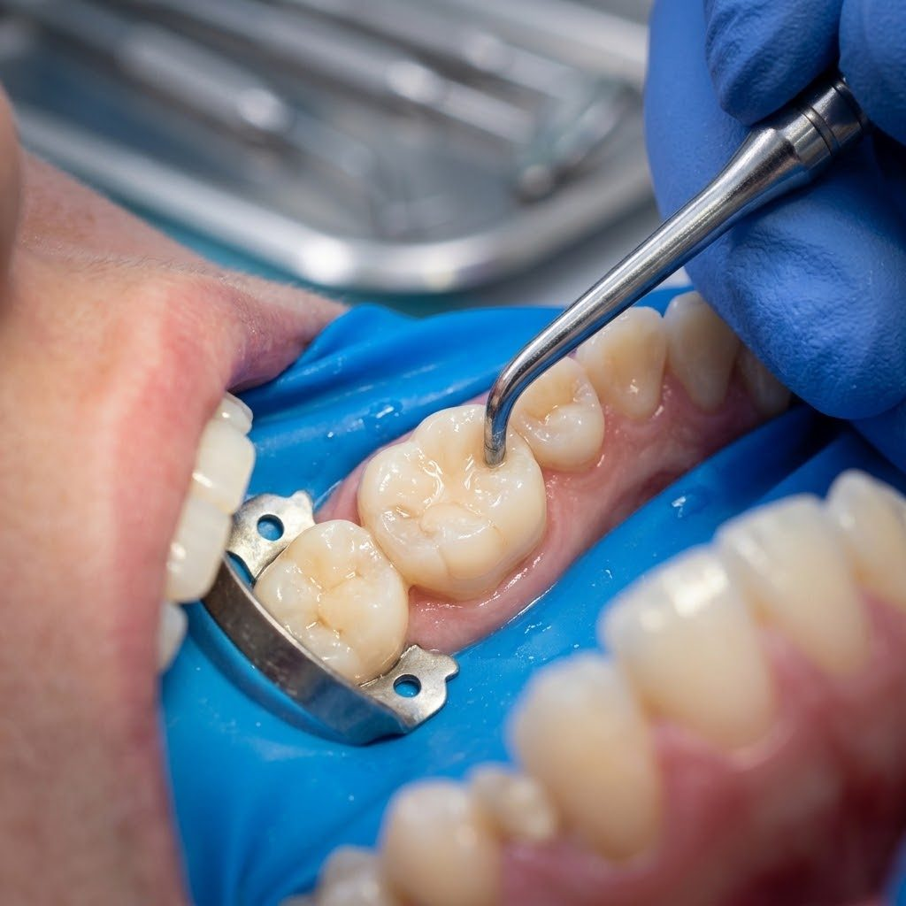

01
Finding it
We examine the tooth and may take an X-ray, since decay between teeth is often invisible.
A filling removes decay and rebuilds the tooth. Caught early, it is quick and simple. Here is what happens, which materials are used and how to tell when a tooth needs attention.

Typical ranges only — your examination decides what applies to you.
Every visit starts with an explanation. Nothing begins until you have agreed to it.
We examine the tooth and may take an X-ray, since decay between teeth is often invisible.
The tooth is numbed if needed, and the decayed part is removed.
The tooth is rebuilt in layers with the chosen material and hardened with a light.
We check how your teeth meet, adjust and polish so the filling does not feel high.
With local anaesthetic it should not. You may feel vibration and pressure.
Composite fillings are hard straight away, but wait until the numbness wears off so you do not bite your lip or cheek.
Usually many years, depending on size, position, grinding habits and how well the area is cleaned.
Not if they are intact and not causing problems. We recommend replacing a filling when it is broken, leaking or has decay under it.
36 & 38, Jalan Pendekar 13,
Taman Ungku Tun Aminah,
81300 Johor Bahru, Johor